Graph Statistics¶
import os
import sys
sys.path.append("../")
from graph import GraphIO
import networkx as nx
from networkx.algorithms.components import number_strongly_connected_components as ncc_strong
from networkx.algorithms.components import number_weakly_connected_components as ncc_weak
import matplotlib.pyplot as plt
import matplotlib.patches as ptch
from matplotlib.lines import Line2D
import seaborn as sns
import numpy as np
import pandas as pd
In this notebook, I will show how to obtain basic graph statistics (number of nodes, density, etc.) from the graphs stored in our filespec.
Load the Graphs¶
In this study, we extracted data from five different connectome datasets. The first, identified as “worm wiring” or “worm” consists of both a hermaphroditic and male c. elegans connectome ([CJB+19], https://wormwiring.org/). The second, identified as “witvliet” or “wit” consists of 8 different hermaphrodite c. elegans connectomes at different developmental ages ([WMM+20], https://nemanode.org/). The third, identified as “ciona” consists of a single connectome of a ciona intestinalis larva ([RLM16]). The fourth, identified as “fafb” consists of a single connectome of a female adult fly brain ([ZLP+18], https://temca2data.org/). The fifth and final dataset consists of a portion of an adult female fly brain ([XJL+20], https://www.janelia.org/project-team/flyem/hemibrain). For more thorough analysis, graphs are subdivided into chemical and electrical synapses.
script_dir = os.getcwd().split('docs')[0]
base_path = os.path.join(script_dir, "json_connectomes")
worm_graphs = []
worm_path = os.path.join(base_path, "worm_wiring/connectome")
for graph_folder in os.listdir(worm_path):
if graph_folder.startswith("."):
continue
graph_folder_path = os.path.join(worm_path, graph_folder)
for graph_file in os.listdir(graph_folder_path):
graph_file_path = os.path.join(graph_folder_path, graph_file)
graph, _, _, _ = GraphIO.load(graph_file_path)
worm_graphs.append(graph)
wit_graphs = []
wit_path = os.path.join(base_path, "witvilet")
for graph_file in os.listdir(wit_path):
path = os.path.join(wit_path, graph_file)
graph, _, _, _ = GraphIO.load(path)
wit_graphs.append(graph)
wit_subgraphs = []
for graph in wit_graphs:
chemical_edges = []
electrical_edges = []
for *edge, attr in graph.edges(data=True, keys=True):
if attr['synapse_type'] == "chemical":
chemical_edges.append((*edge,))
elif attr['synapse_type'] == "electrical":
electrical_edges.append((*edge,))
g_chemical = nx.Graph.copy(graph.edge_subgraph(chemical_edges))
g_chemical.graph["Synapse Type"] = "Chemical"
g_electrical = nx.Graph.copy(graph.edge_subgraph(electrical_edges))
g_electrical.graph["Synapse Type"] = "Total Gap Junction"
wit_subgraphs.extend([g_chemical, g_electrical])
ciona_path = os.path.join(base_path, "ciona.json")
fafb_path = os.path.join(base_path, "fafb.json")
neuPrint_path = os.path.join(base_path, "neuPrint_graphs.json")
ciona_graph, _, _, _ = GraphIO.load(ciona_path)
fafb_graph, _, _, _ = GraphIO.load(fafb_path)
neuPrint_graph, _, _, _ = GraphIO.load(neuPrint_path)
Obtain Graph Statistics and Metadata¶
Basic graph statistics such as density and graph size are useful measures to obtain an intuitive sense of the relevant qualities of each connectome, although they are not useful for statistically rigorous comparison due to the correlation of many statistics with each other. The degree distributions are also useful exploratory metrics to see how the neurons are connected to each other within each connectome.
statnames = ["lcc_size", "density", "num_strong", "num_weak",
"in_degree", "out_degree", "synapse_type", "sex", "graph_origin"]
stats = {statname:[] for statname in statnames}
def append_stats(g, stats):
stats["lcc_size"].append(len(max(nx.weakly_connected_components(g))))
stats["density"].append(nx.density(g))
stats["num_strong"].append(ncc_strong(g))
stats["num_weak"].append(ncc_weak(g))
stats["in_degree"].append([d for n, d in g.in_degree()])
stats["out_degree"].append([d for n, d in g.out_degree()])
stats["synapse_type"].append(g.graph['Synapse Type'])
stats["sex"].append(g.graph['Sex'])
digraphs = [worm_graphs, wit_subgraphs, [fafb_graph], [neuPrint_graph]]
digraph_origins = ["worm", "wit", "fafb", "neuPrint"]
for graphs, origin in zip(digraphs, digraph_origins):
for g in graphs:
stats["graph_origin"].append(origin)
append_stats(g, stats)
#ciona uses slightly different functions since it is undirected
stats["graph_origin"].append("ciona")
stats["lcc_size"].append(len(max(nx.connected_components(ciona_graph))))
stats["density"].append(nx.density(ciona_graph))
stats["num_strong"].append(nx.number_connected_components(ciona_graph))
stats["num_weak"].append(nx.number_connected_components(ciona_graph))
stats["in_degree"].append([d for n, d in ciona_graph.degree()])
stats["out_degree"].append([d for n, d in ciona_graph.degree()])
stats["synapse_type"].append(ciona_graph.graph["Synapse Type"])
stats["sex"].append(ciona_graph.graph["Sex"])
stats["max_in_degree"] = [max(stats["in_degree"][i]) for i, _ in enumerate(stats["in_degree"])]
stats["max_out_degree"] = [max(stats["out_degree"][i]) for i, _ in enumerate(stats["out_degree"])]
stats = pd.DataFrame(stats)
stats.head()
| lcc_size | density | num_strong | num_weak | in_degree | out_degree | synapse_type | sex | graph_origin | max_in_degree | max_out_degree | |
|---|---|---|---|---|---|---|---|---|---|---|---|
| 0 | 446 | 0.023723 | 163 | 9 | [4, 4, 6, 7, 7, 10, 11, 6, 7, 7, 3, 11, 12, 9,... | [15, 20, 16, 19, 15, 11, 19, 11, 19, 10, 9, 5,... | Chemical | Hermaphrodite | worm | 65 | 49 |
| 1 | 460 | 0.006606 | 469 | 9 | [0, 0, 1, 1, 1, 1, 0, 0, 2, 2, 4, 1, 1, 4, 3, ... | [6, 7, 3, 5, 5, 3, 5, 1, 1, 5, 5, 5, 5, 7, 4, ... | Asymmetric Gap Junction | Hermaphrodite | worm | 56 | 31 |
| 2 | 460 | 0.013135 | 9 | 9 | [6, 7, 4, 6, 6, 4, 5, 1, 3, 7, 9, 6, 6, 10, 6,... | [6, 7, 4, 6, 6, 4, 5, 1, 3, 7, 9, 6, 6, 10, 6,... | Symmetric Gap Junction | Hermaphrodite | worm | 59 | 59 |
| 3 | 559 | 0.016076 | 220 | 17 | [4, 4, 6, 7, 7, 10, 11, 6, 7, 7, 3, 11, 12, 9,... | [15, 20, 16, 19, 15, 11, 19, 11, 18, 10, 9, 5,... | Chemical | Male | worm | 49 | 50 |
| 4 | 57 | 0.005128 | 586 | 46 | [0, 0, 1, 1, 1, 1, 0, 0, 2, 2, 4, 1, 1, 4, 3, ... | [5, 6, 3, 5, 5, 3, 5, 1, 1, 5, 5, 5, 5, 7, 4, ... | Asymmetric Gap Junction | Male | worm | 37 | 40 |
Visualize¶
We visualize each graph statistic for all the extracted graphs, making note of relevant properties such as synapse type and sex.
palette = sns.color_palette("deep")
dark_palette = sns.color_palette("dark")
bright_palette = sns.color_palette("bright")
syntypes = ["Chemical", "Symmetric Gap Junction", "Asymmetric Gap Junction", "Total Gap Junction", "Mixed"]
graph_origins = ["worm", "wit", "ciona", "fafb", "neuPrint"]
syntype_pos = [float(i) for i, _ in enumerate(syntypes)]
syntype2pos = {syntype:i for i, syntype in zip(syntype_pos, syntypes)}
syn_pos = np.array([syntype2pos[syntype] for syntype in stats.synapse_type])
syn_pos += 0.25*(np.random.rand(syn_pos.shape[0]) - 0.5) #adding jitter
sexes = ["Male", "Female", "Hermaphrodite"]
sex2shape = {"Male":"^", "Hermaphrodite":"o", "Female":"p"}
graph2color = {"ciona":palette[0], "fafb":palette[1], "worm":dark_palette[2], "wit":bright_palette[2], "neuPrint":palette[3]}
graph2patch = {}
for g_origin in graph_origins:
graph2patch[g_origin] = ptch.Patch(color=graph2color[g_origin], label=g_origin)
sex2patch = {}
for isex in sexes:
sex2patch[isex] = Line2D([0], [0], marker=sex2shape[isex], color="w", markerfacecolor="k", label=isex)
def vis_stat(stat, stat_name, use_log=True):
fig_max = np.max(stat)
sns.set_context('talk')
fig = plt.figure()
ax = plt.gca()
plt.hold=True
for isex in sexes:
for g_origin in graph_origins:
mask = np.logical_and(stats.sex==isex, stats.graph_origin==g_origin)
plt.scatter(syn_pos[mask],
stat[mask],
c=np.array([graph2color[g_origin]]),
label=g_origin,
marker=sex2shape[isex])
grace_factor = 1.1
if use_log:
grace_factor = np.exp(grace_factor)
plt.text(syntype_pos[0], grace_factor*fig_max, "Chemical", ha="center")
plt.text(syntype_pos[2], grace_factor*fig_max, "Electrical", ha="center")
plt.hold=False
plt.ylabel(stat_name)
if stat_name.endswith("degree"):
plt.ylim((1, 10**4))
ax.xaxis.set_ticks(syntype_pos)
ax.xaxis.set_ticklabels(syntypes, rotation=45)
fill_width = 1
ax.axvspan(syntype_pos[0]-fill_width/2, syntype_pos[0]+fill_width/2, color=bright_palette[4], alpha=0.1)
ax.axvspan(syntype_pos[1]-fill_width/2, syntype_pos[3]+fill_width/2, color=bright_palette[8], alpha=0.1)
if use_log:
ax.set_yscale("log")
handles = [graph2patch[g_origin] for g_origin in graph_origins]+[sex2patch[isex] for isex in sexes]
plt.legend(handles=handles, bbox_to_anchor=(1,1))
return fig
vis_stat(stats.lcc_size, "size of largest WCC")
vis_stat(stats.density, "Density", use_log=False)
vis_stat(stats.num_strong, "# of SCCs")
vis_stat(stats.num_weak, "# of WCCs")
vis_stat(stats.max_in_degree, "max in-degree")
_ = vis_stat(stats.max_out_degree, "max out-degree")
 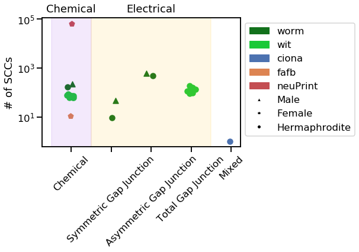
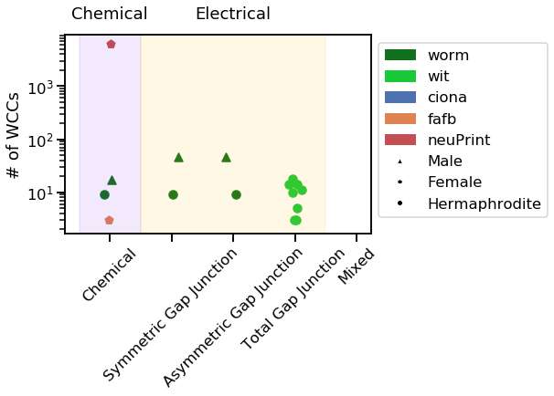
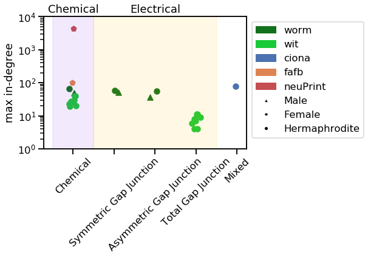
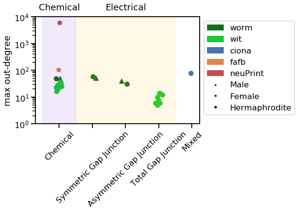
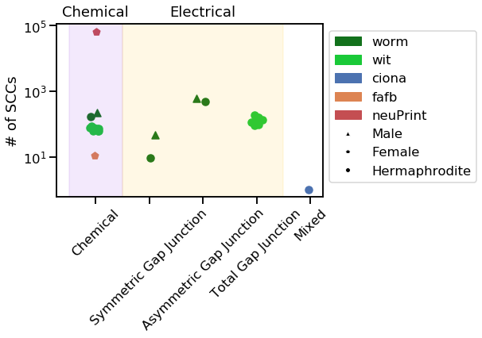
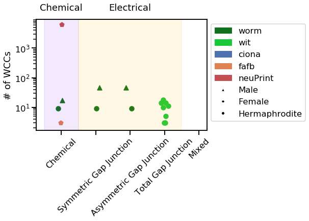
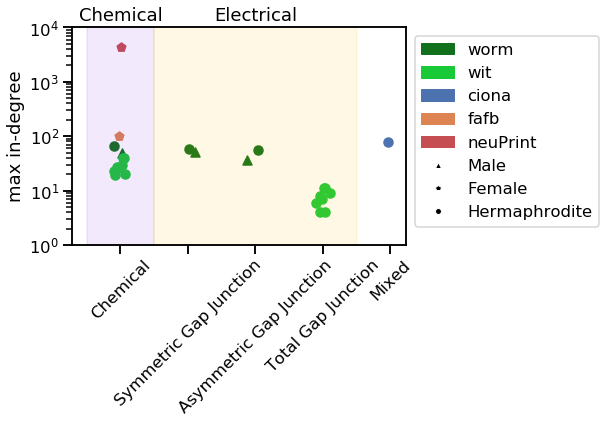
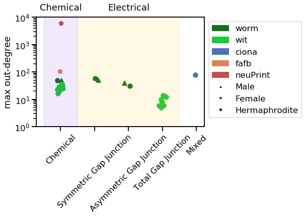
Notice how the neuPrint graph is much bigger than the others, and so generally diverges on a variety of metrics.
Visualize Degree Distributions¶
We also visualize degree distributions in the same way.
def vis_degree_dist(dd, graph_origin, sex, dd_name):
dd_plot = []
dd_labels = []
#Aggregating worm_wiring and witvilet graphs
worm = sum(dd[graph_origin=="worm"], [])
worm_dd, _ = np.histogram(worm, bins=max(worm))
worm_dd = worm_dd/2 #average over sex
dd_plot.append(worm_dd)
dd_labels.append("worm")
wit = sum(dd[graph_origin=="wit"], [])
wit_dd, _ = np.histogram(wit, bins=max(wit))
wit_dd = wit_dd / len(wit_graphs) #average over age
dd_plot.append(wit_dd)
dd_labels.append("wit")
for i, ddi in enumerate(dd):
if graph_origin[i] != "wit" and graph_origin[i]!="worm":
hist, _ = np.histogram(ddi, bins=int(max(ddi)))
dd_plot.append(hist)
dd_labels.append(graph_origin[i])
#plot
fig = plt.figure()
plt.hold = True
for ddi, dd_label in zip(dd_plot, dd_labels):
plt.plot(ddi, ".", color=graph2color[dd_label], label=dd_label)
plt.hold = False
plt.xlabel(dd_name)
plt.ylabel("Count")
plt.legend(bbox_to_anchor=(1, 1))
plt.yscale("log")
plt.xscale("log")
return fig
vis_degree_dist(stats.in_degree, stats.graph_origin, stats.sex, "In Degree")
_ = vis_degree_dist(stats.out_degree, stats.graph_origin, stats.sex, "Out Degree")
 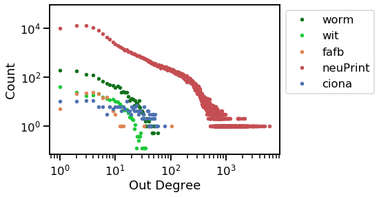
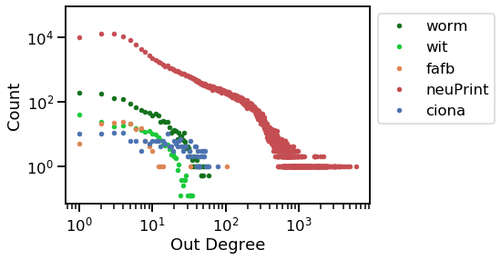
Now, it is clear that the ciona counts remain relatively uniform as degree increases, but all the other graphs decline sharply as degree increases.
Witvliet-specific graphs¶
Since the witvliet dataset has 8 c. elegans connectomes, each with a different age, we can visualize how the connectomes change with age.
ages = []
for g in wit_graphs:
ages.append(g.graph['age'])
ages = np.array(ages)
syntypes = ["Chemical", "Symmetric Gap Junction", "Asymmetric Gap Junction", "Total Gap Junction"]
syntype2color = {"Chemical":bright_palette[4], "Total Gap Junction":bright_palette[8]}
def vis_stat(stat, stat_name):
fig_max = np.max(stat)
fig = plt.figure()
ax = plt.gca()
plt.hold=True
for syntype, synlabel in zip(["Chemical", "Total Gap Junction"], ["Chemical", "Electrical"]):
plt.scatter(ages,
stat[np.logical_and(stats.synapse_type==syntype, stats.graph_origin=="wit")],
c=np.array([syntype2color[syntype]]),
marker=sex2shape[wit_graphs[0].graph["Sex"]],
label=synlabel)
plt.hold=False
plt.xlabel("Age (hours)")
plt.ylabel(stat_name)
plt.legend(bbox_to_anchor=(1,1))
return fig
vis_stat(stats.lcc_size, "size of largest WCC")
vis_stat(stats.density, "Density")
vis_stat(stats.num_strong, "# of SCCs")
vis_stat(stats.num_weak, "# of WCCs")
vis_stat(stats.max_in_degree, "max in-degree")
_ = vis_stat(stats.max_out_degree, "max out-degree")

 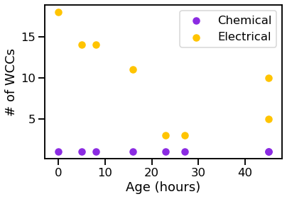
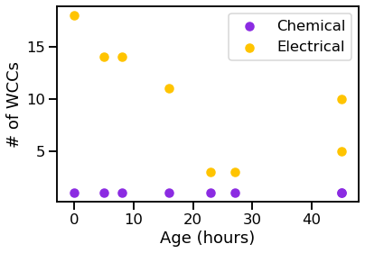


We can see that the graphs generally get bigger over time, and the chemical synapses grow more dense, while the density of the electrical synapses remains relatively constant.
Degree Distributions¶
We also visualize the degree distributions the same way.
def vis_degree_dist(dd, max_degree, ages, dd_name):
max_max_degree = max(max_degree)
dd_x = np.array(range(max_max_degree))
dd_z = []
for ddi in dd:
hist, _ = np.histogram(ddi, bins=max(ddi))
hist = np.pad(hist, (0, max_max_degree-max(ddi)))
dd_z.append(hist)
dd_z = np.transpose(np.array(dd_z))
cm = plt.cm.get_cmap('Greens')
colors = cm(ages/max(ages))
fig = plt.figure()
plt.hold = True
for i, age in enumerate(ages):
plt.plot(dd_x, dd_z[:, i], c=colors[i])
sm = plt.cm.ScalarMappable(cmap=cm, norm=plt.Normalize(vmin=min(ages), vmax=max(ages)))
plt.colorbar(sm, label="Age (hours)")
plt.xlabel(dd_name)
plt.ylabel("Count")
plt.hold = False
return fig
chem_ins = stats.in_degree[np.logical_and(stats.graph_origin=="wit", stats.synapse_type=="Chemical")]
chem_in_maxes = stats.max_in_degree[np.logical_and(stats.graph_origin=="wit", stats.synapse_type=="Chemical")]
vis_degree_dist(chem_ins, chem_in_maxes, ages, "chemical in-degree")
elec_ins = stats.in_degree[np.logical_and(stats.graph_origin=="wit", stats.synapse_type=="Total Gap Junction")]
elec_in_maxes = stats.max_in_degree[np.logical_and(stats.graph_origin=="wit", stats.synapse_type=="Total Gap Junction")]
vis_degree_dist(elec_ins, elec_in_maxes, ages, "electrical in-degree")
chem_outs = stats.out_degree[np.logical_and(stats.graph_origin=="wit", stats.synapse_type=="Chemical")]
chem_out_maxes = stats.max_out_degree[np.logical_and(stats.graph_origin=="wit", stats.synapse_type=="Chemical")]
vis_degree_dist(chem_outs, chem_out_maxes, ages, "chemical out-degree")
elec_outs = stats.out_degree[np.logical_and(stats.graph_origin=="wit", stats.synapse_type=="Total Gap Junction")]
elec_out_maxes = stats.max_out_degree[np.logical_and(stats.graph_origin=="wit", stats.synapse_type=="Total Gap Junction")]
_ = vis_degree_dist(elec_outs, elec_out_maxes, ages, "electrical out-degree")

 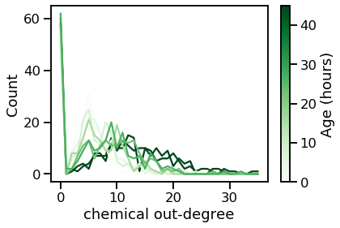
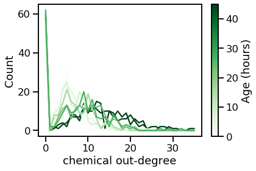

From these plots, we can tell that the degree distribution remains relatively static across age.
References¶
- CJB+19
Steven J. Cook, Travis A. Jarrell, Christopher A. Brittin, Yi Wang, Adam E. Bloniarz, Maksim A. Yakovlev, Ken C. Q. Nguyen, Leo T.-H. Tang, Emily A. Bayer, Janet S. Duerr, Hannes E. Bülow, Oliver Hobert, David H. Hall, and Scott W. Emmons. Whole-animal connectomes of both Caenorhabditis elegans sexes. Nature, 571(7763):63–71, July 2019. Number: 7763 Publisher: Nature Publishing Group. URL: https://www.nature.com/articles/s41586-019-1352-7 (visited on 2021-05-06), doi:10.1038/s41586-019-1352-7.
- RLM16
Kerrianne Ryan, Zhiyuan Lu, and Ian A Meinertzhagen. The CNS connectome of a tadpole larva of Ciona intestinalis (L.) highlights sidedness in the brain of a chordate sibling. eLife, 5:e16962, December 2016. Publisher: eLife Sciences Publications, Ltd. URL: https://doi.org/10.7554/eLife.16962 (visited on 2021-05-06), doi:10.7554/eLife.16962.
- WMM+20
Daniel Witvliet, Ben Mulcahy, James K. Mitchell, Yaron Meirovitch, Daniel R. Berger, Yuelong Wu, Yufang Liu, Wan Xian Koh, Rajeev Parvathala, Douglas Holmyard, Richard L. Schalek, Nir Shavit, Andrew D. Chisholm, Jeff W. Lichtman, Aravinthan D. T. Samuel, and Mei Zhen. Connectomes across development reveal principles of brain maturation in C. elegans. bioRxiv, pages 2020.04.30.066209, April 2020. Publisher: Cold Spring Harbor Laboratory Section: New Results. URL: https://www.biorxiv.org/content/10.1101/2020.04.30.066209v1 (visited on 2021-05-06), doi:10.1101/2020.04.30.066209.
- XJL+20
C. Shan Xu, Michal Januszewski, Zhiyuan Lu, Shin-ya Takemura, Kenneth J. Hayworth, Gary Huang, Kazunori Shinomiya, Jeremy Maitin-Shepard, David Ackerman, Stuart Berg, Tim Blakely, John Bogovic, Jody Clements, Tom Dolafi, Philip Hubbard, Dagmar Kainmueller, William Katz, Takashi Kawase, Khaled A. Khairy, Laramie Leavitt, Peter H. Li, Larry Lindsey, Nicole Neubarth, Donald J. Olbris, Hideo Otsuna, Eric T. Troutman, Lowell Umayam, Ting Zhao, Masayoshi Ito, Jens Goldammer, Tanya Wolff, Robert Svirskas, Philipp Schlegel, Erika R. Neace, Christopher J. Knecht, Chelsea X. Alvarado, Dennis A. Bailey, Samantha Ballinger, Jolanta A. Borycz, Brandon S. Canino, Natasha Cheatham, Michael Cook, Marisa Dreher, Octave Duclos, Bryon Eubanks, Kelli Fairbanks, Samantha Finley, Nora Forknall, Audrey Francis, Gary Patrick Hopkins, Emily M. Joyce, SungJin Kim, Nicole A. Kirk, Julie Kovalyak, Shirley A. Lauchie, Alanna Lohff, Charli Maldonado, Emily A. Manley, Sari McLin, Caroline Mooney, Miatta Ndama, Omotara Ogundeyi, Nneoma Okeoma, Christopher Ordish, Nicholas Padilla, Christopher Patrick, Tyler Paterson, Elliott E. Phillips, Emily M. Phillips, Neha Rampally, Caitlin Ribeiro, Madelaine K. Robertson, Jon Thomson Rymer, Sean M. Ryan, Megan Sammons, Anne K. Scott, Ashley L. Scott, Aya Shinomiya, Claire Smith, Kelsey Smith, Natalie L. Smith, Margaret A. Sobeski, Alia Suleiman, Jackie Swift, Satoko Takemura, Iris Talebi, Dorota Tarnogorska, Emily Tenshaw, Temour Tokhi, John J. Walsh, Tansy Yang, Jane Anne Horne, Feng Li, Ruchi Parekh, Patricia K. Rivlin, Vivek Jayaraman, Kei Ito, Stephan Saalfeld, Reed George, Ian Meinertzhagen, Gerald M. Rubin, Harald F. Hess, Louis K. Scheffer, Viren Jain, and Stephen M. Plaza. A Connectome of the Adult Drosophila Central Brain. bioRxiv, pages 2020.01.21.911859, January 2020. Publisher: Cold Spring Harbor Laboratory Section: New Results. URL: https://www.biorxiv.org/content/10.1101/2020.01.21.911859v1 (visited on 2021-05-06), doi:10.1101/2020.01.21.911859.
- ZLP+18
Zhihao Zheng, J. Scott Lauritzen, Eric Perlman, Camenzind G. Robinson, Matthew Nichols, Daniel Milkie, Omar Torrens, John Price, Corey B. Fisher, Nadiya Sharifi, Steven A. Calle-Schuler, Lucia Kmecova, Iqbal J. Ali, Bill Karsh, Eric T. Trautman, John A. Bogovic, Philipp Hanslovsky, Gregory S. X. E. Jefferis, Michael Kazhdan, Khaled Khairy, Stephan Saalfeld, Richard D. Fetter, and Davi D. Bock. A Complete Electron Microscopy Volume of the Brain of Adult Drosophila melanogaster. Cell, 174(3):730–743.e22, July 2018. Publisher: Elsevier. URL: https://www.cell.com/cell/abstract/S0092-8674(18)30787-6 (visited on 2021-05-06), doi:10.1016/j.cell.2018.06.019.